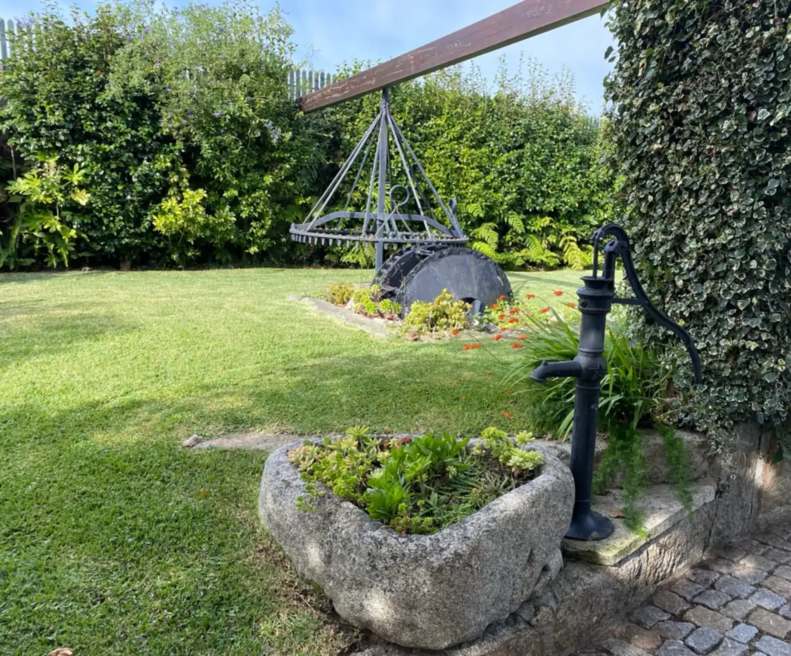
Aveleda · Vila do Conde
Quinta
Casal Camaz
Uma visita à Quinta, em menos de um minuto.
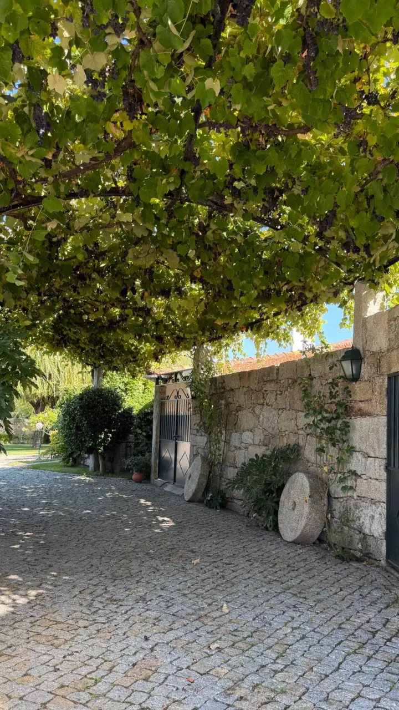
A entrada
Desde 1995 a receber celebrações.
Casamentos, batizados, comunhões, aniversários e eventos corporativos, numa antiga casa agrícola.
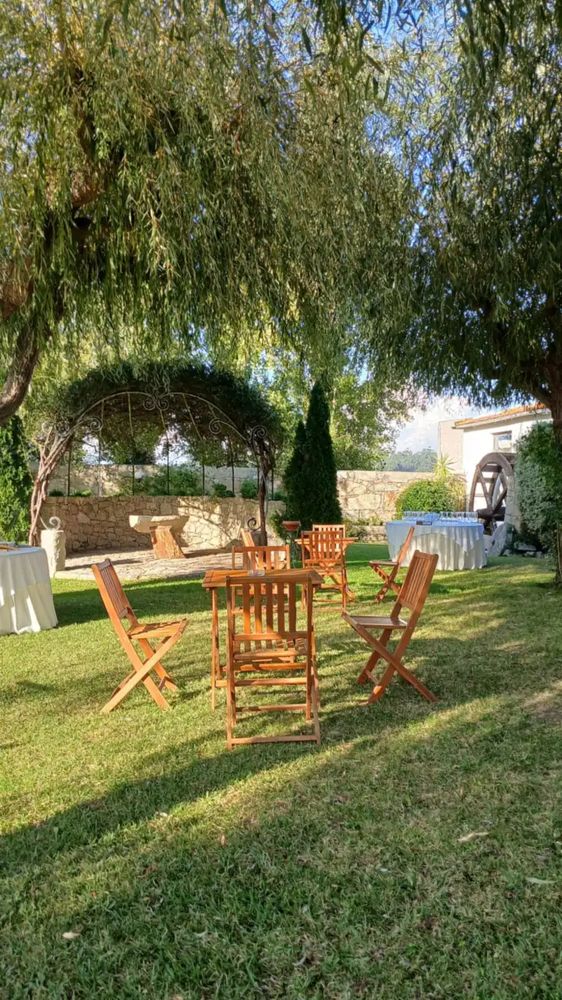
Jardim da Quinta
Salgueiros e luz de fim de tarde.
É aqui que se faz a receção aos convidados e se servem os aperitivos, à sombra dos salgueiros.
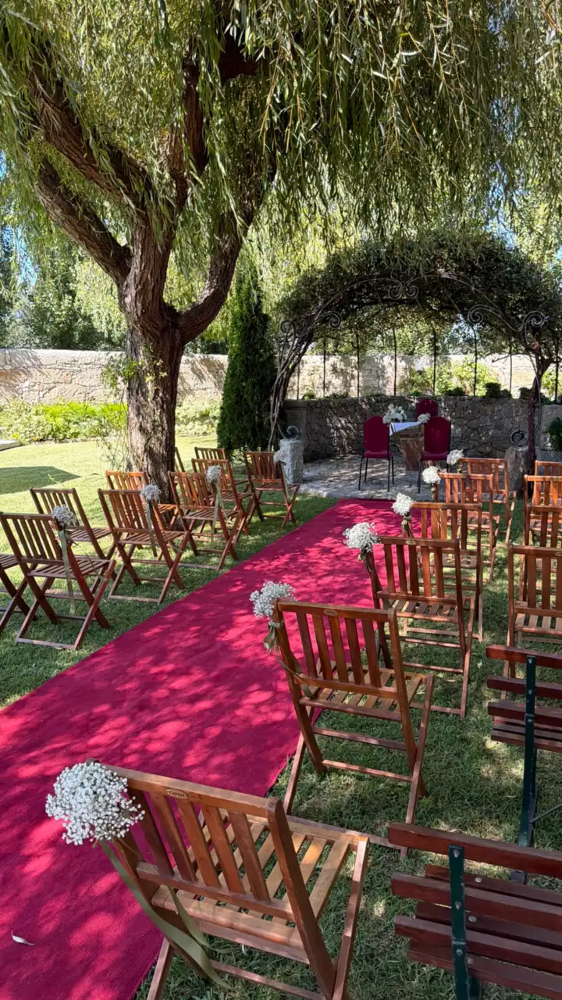
Cerimónia civil
O sim, lá fora.
O centro do jardim pode receber a cerimónia civil, rodeado de vegetação e à sombra das árvores.
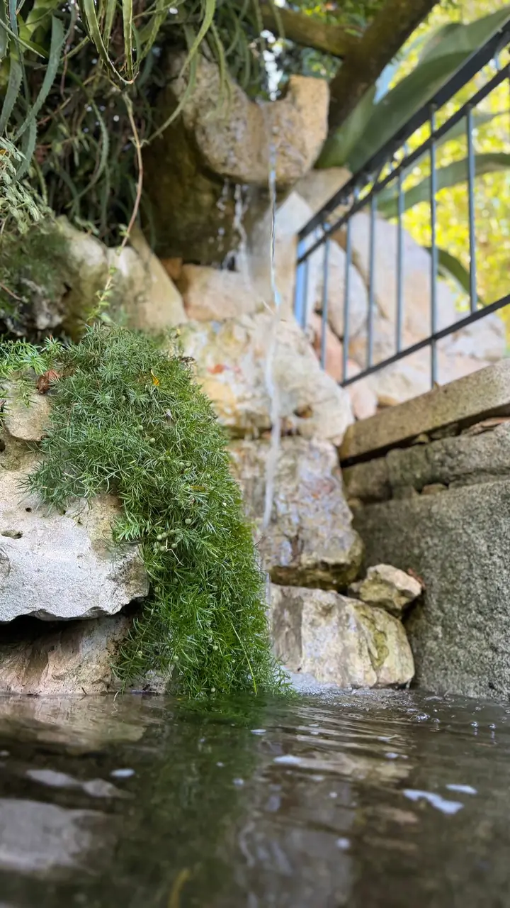
Queda de água
Recantos para descobrir.
Entre pedras e vegetação, junto ao lago da Quinta.
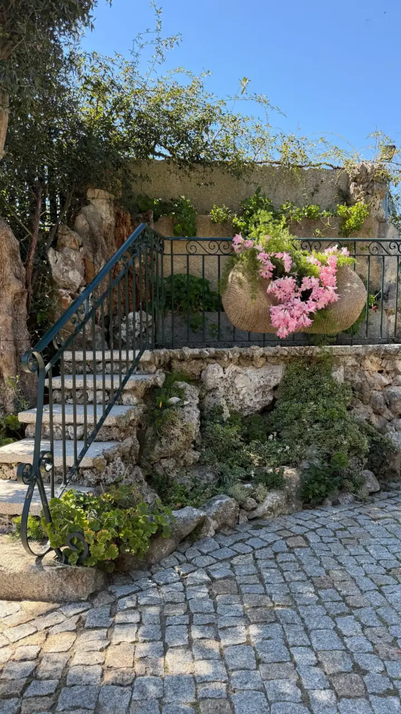
Varanda do jardim
Um bom lugar para fotografias.
Com vista sobre o jardim, para guardar os momentos do dia.
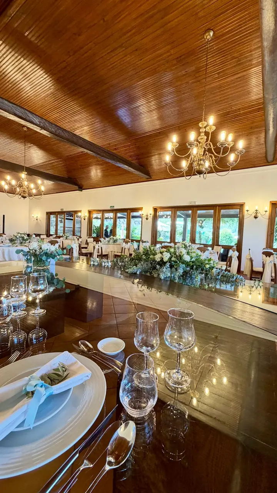
Salão principal
O centro de cada celebração.
Climatizado, para receber todos com conforto do início ao fim.
até180convidados
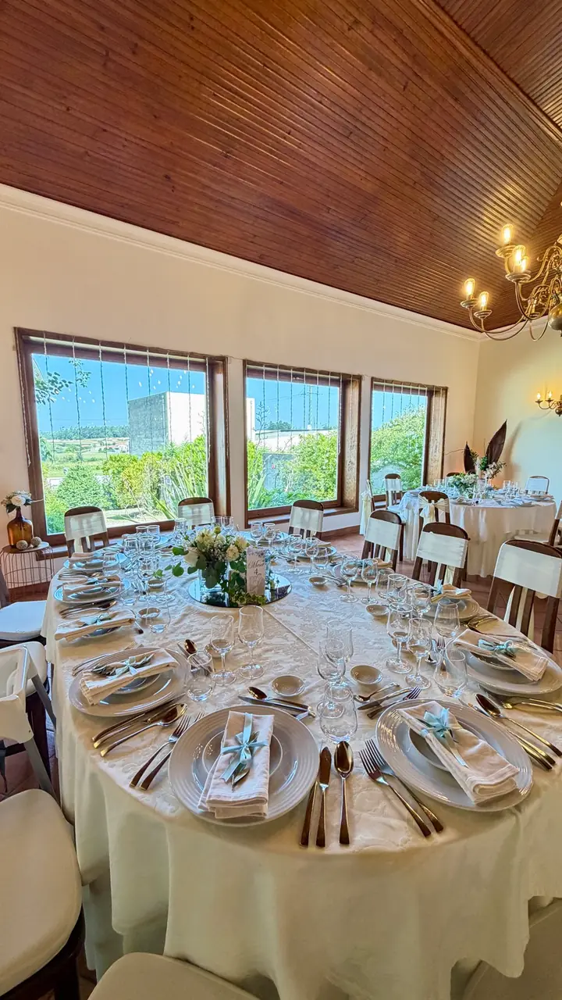
Salão principal
A sala à vossa medida.
Desenhamos convosco a disposição das mesas, para que o salão fique tal como o imaginaram.
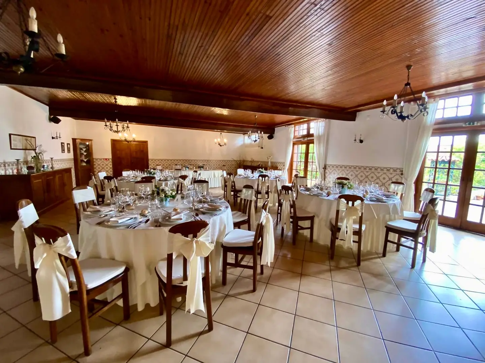
Salão complementar
O salão original da Quinta.
Para sobremesas, frutas e queijos, ou como apoio em dias de chuva.
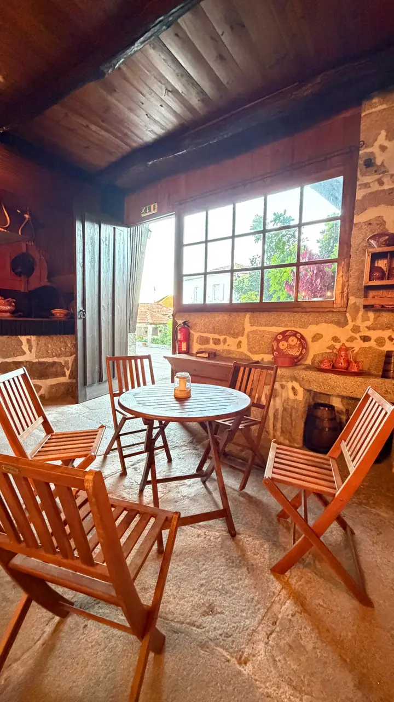
Cozinha regional
Das origens da Quinta.
A antiga cozinha rústica da casa agrícola mantém-se, agora com uma nova função.
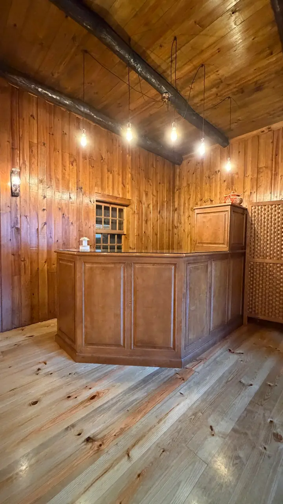
Bar interior
Hoje, o bar da festa.
Com acesso direto à eira e ao salão principal.
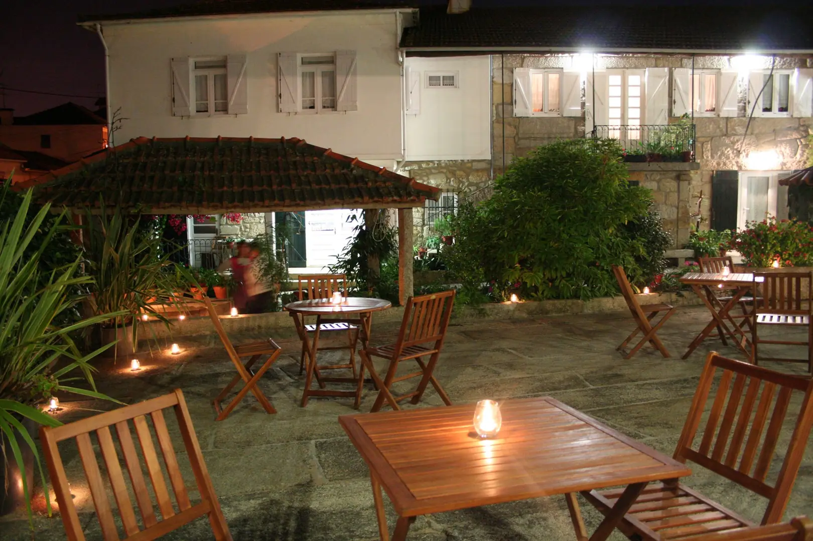
A eira
Jantares ao ar livre.
Ao cair da noite, a antiga eira recebe refeições e outros momentos da celebração.
até60convidados
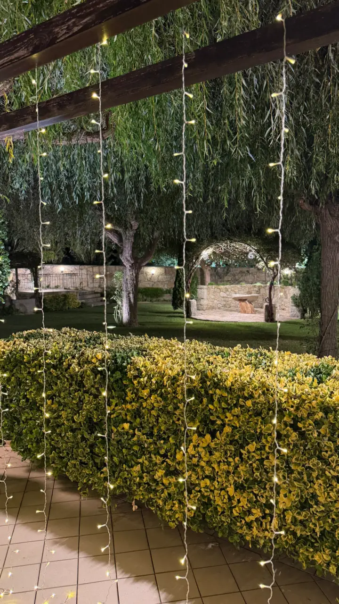
Jardim à noite
O jardim também tem vida noturna.
Luzes entre os salgueiros e o arco iluminado ao fundo. Fica já o aviso: ninguém vai querer ir para casa cedo.
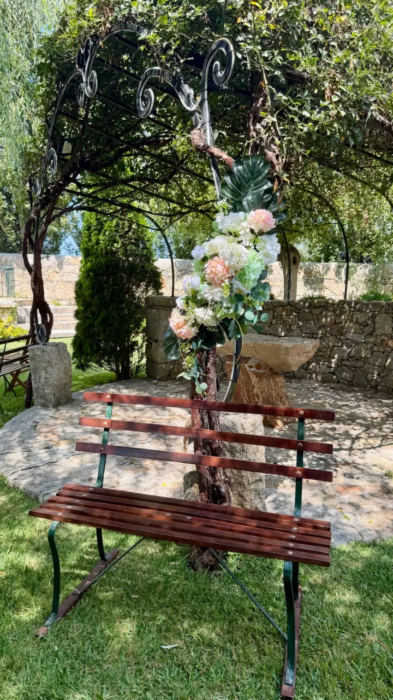
Vamos conversar?
Agora, venham ver ao vivo.
Marquem uma visita e mostramos-vos a Quinta. Digam-nos a data, o tipo de celebração e quantas pessoas querem reunir.